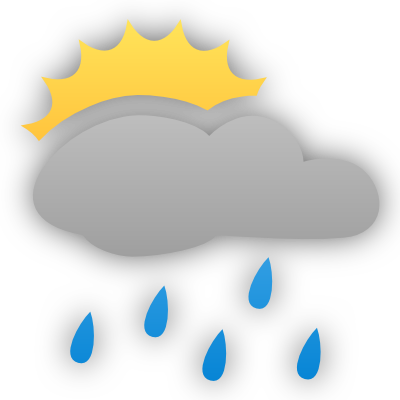
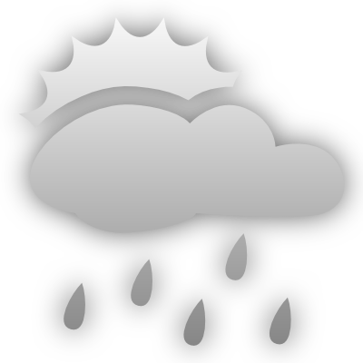
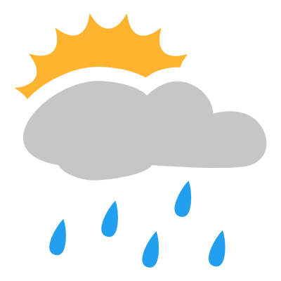
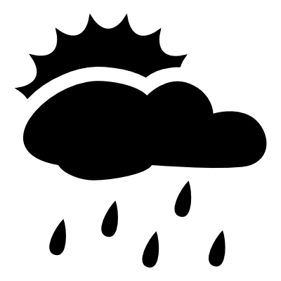

The BBC weather desklet retrieves RSS feeds of weather from the BBC, parses the information and displays them on your Cinnamon desktop in a neat way. It comes with a choice of icons and plenty of options for configuring how it looks. The desklet is not produced or endorsed by the BBC
The forecast will be refreshed approximately every thirty minutes. You can always force a refresh by clicking the refresh button at the bottom right. Hovering over the icons in the forecast area will show their descriptions, whilst the link to www.bbc.co.uk/weather at the bottom of the desklet will take you to a more detailed forecast for your area.
Right click on the desklet and select 'Configure...' to enter the configuration screen.
The Location must be specified as a numeric code as used on the BBC weather website. To find your location code visit the BBC Weather site and search for your city. The code you need is the numeric part at the end of URL for the city's weather. For example, a search for London takes you to:
http://www.bbc.co.uk/weather/2643743The Location code is therefore 2643743.
You can experiment with the various display settings. Here's a sample of what the different icon sets look like:
|  | Colourful |  | Light | Dark | |
|  | Flat colouful | Flat white |  | Flat black |
This desklet is a fork of Loganj's AccuWeather Desklet. It is written by Chris Hastie and released under the GNU General Public License version 3.
The desklet makes use of the marknote xml library, which is Copyright © 2011 jbulb.org and redistributed under the terms of Apache Licence, Version 2.0.
The icons are based on the plain weather icons by Merlin The Red. They are distributed under the Creative Commons Attribution-NonCommercial-ShareAlike license.